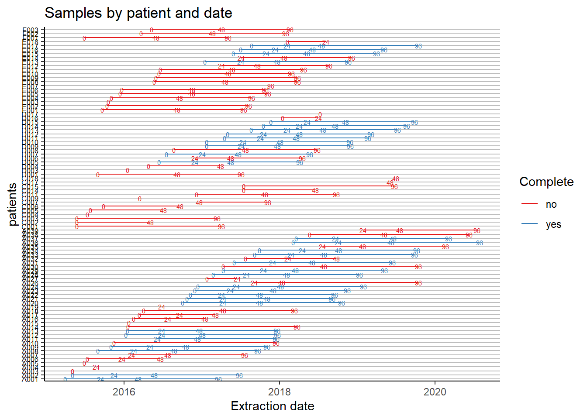

Last updated: 2022-04-27
Checks: 6 1
Knit directory: advanz4/
This reproducible R Markdown analysis was created with workflowr (version 1.7.0). The Checks tab describes the reproducibility checks that were applied when the results were created. The Past versions tab lists the development history.
The R Markdown file has unstaged changes. To know which version of the R Markdown file created these results, you’ll want to first commit it to the Git repo. If you’re still working on the analysis, you can ignore this warning. When you’re finished, you can run wflow_publish to commit the R Markdown file and build the HTML.
Great job! The global environment was empty. Objects defined in the global environment can affect the analysis in your R Markdown file in unknown ways. For reproduciblity it’s best to always run the code in an empty environment.
The command set.seed(20211203) was run prior to running the code in the R Markdown file. Setting a seed ensures that any results that rely on randomness, e.g. subsampling or permutations, are reproducible.
Great job! Recording the operating system, R version, and package versions is critical for reproducibility.
Nice! There were no cached chunks for this analysis, so you can be confident that you successfully produced the results during this run.
Great job! Using relative paths to the files within your workflowr project makes it easier to run your code on other machines.
Great! You are using Git for version control. Tracking code development and connecting the code version to the results is critical for reproducibility.
The results in this page were generated with repository version 8bc62ca. See the Past versions tab to see a history of the changes made to the R Markdown and HTML files.
Note that you need to be careful to ensure that all relevant files for the analysis have been committed to Git prior to generating the results (you can use wflow_publish or wflow_git_commit). workflowr only checks the R Markdown file, but you know if there are other scripts or data files that it depends on. Below is the status of the Git repository when the results were generated:
Ignored files:
Ignored: .RData
Ignored: .Rhistory
Ignored: .Rproj.user/
Ignored: data/mre.rds
Unstaged changes:
Modified: analysis/04_build_metadata.Rmd
Note that any generated files, e.g. HTML, png, CSS, etc., are not included in this status report because it is ok for generated content to have uncommitted changes.
These are the previous versions of the repository in which changes were made to the R Markdown (analysis/04_build_metadata.Rmd) and HTML (docs/04_build_metadata.html) files. If you’ve configured a remote Git repository (see ?wflow_git_remote), click on the hyperlinks in the table below to view the files as they were in that past version.
| File | Version | Author | Date | Message |
|---|---|---|---|---|
| Rmd | 8bc62ca | cblazquez | 2022-04-20 | Fixed problem that arose when incorporating Adenovirus counts to metadata. |
| html | 8bc62ca | cblazquez | 2022-04-20 | Fixed problem that arose when incorporating Adenovirus counts to metadata. |
| Rmd | 462bcfc | cblazquez-irsi | 2022-04-19 | fixed file encoding problem |
| Rmd | 0527e88 | cblazquez | 2022-04-19 | Added buld_metadata.Rmd to analysis. Added MetadataManagement to .gitignore |
Metadata consists on two tables. ne with sample information, coming a merge between two tables, the one with the samples collected in HC and the other ones from IrsiCaixa. The other table contains all the relevant clinical and demographic information along with group data
variables_selected <- read.csv(here::here("Metadata","MetadataManagement","Var_names.csv"), header=T, encoding = "UTF-8") %>%
dplyr::filter(selected == "YES")
mySampleData<-here::here("Metadata","MetadataManagement","metadata.csv")%>%
read.csv(.) %>%
relocate(CODE,Week,ExtractionDate,PatCode) %>%
mutate(ExtractionDate = as.character(format(as.Date(ExtractionDate), "%d%b%Y"))) %>%
select(-c(DateDiff))
mySampleData %>%
filter(Selected_For_Sequencing == "Yes") %>%
select(CODE, PatCode) %>%
group_by(PatCode) %>%
summarise(n=n()) %>%
filter(n<2)
#> # A tibble: 0 x 2
#> # ... with 2 variables: PatCode <chr>, n <int>
myClinicalData<-here::here("Metadata","MetadataManagement","Clinical_Table.csv") %>%
read.csv(., encoding = "UTF-8") %>%
select(variables_selected$VarName) %>%
mutate(PatCode = gsub("-","",PatCode)) %>%
mutate(group = case_when(Treat == "ABC+3TC+DGT" ~ "DTG",
Treat == "ABC+3TC+DRV+RTV" ~ "DRV/r"))
myMergedMetadata <- myClinicalData %>%
right_join(mySampleData, ., by="PatCode") %>%
# filter(Selected_For_Sequencing == "Yes") %>%
relocate(PatCode, Week, group) %>%
arrange(PatCode, Week) %>%
dplyr::rename(!!set_names(variables_selected$VarName, variables_selected$NewName)) %>%
dplyr::rename(
record_id = pat_code,
time_point = Week
)
# glimpse(myMergedMetadata)Raw extracted data had a “melted” structure, so we may need to change it to wide format
vars=c("CD4 value","CD8 value", "8+38+DR+", "PCR", "IL-6", "TNF-a", "sCD14")
names(vars) <- c("CD4","CD8", "CD8_CD38_DR", "CRP", "IL6", "TNFa", "sCD14")
MetadataLab<-here::here("Metadata", "MetadataManagement", "LabData.xls") %>%
readxl::read_excel() %>%
filter(ParamName %in% vars & PatCode != "TMP??-000") %>%
pivot_wider(id_cols = c("PatCode", "Week"),names_from="ParamName", values_from = "Result") %>%
dplyr::select(record_id = PatCode,
time_point = Week,
CD4 = `CD4 value`,
CD8 = `CD8 value`,
CD8_CD38_DR = `8+38+DR+`,
CRP = PCR,
IL6 = `IL-6`,
TNFa = `TNF-a`,
sCD14 = sCD14
) %>%
mutate(time_point = as.numeric(time_point)) %>%
mutate(record_id = gsub("-","",record_id)) %>%
left_join(myMergedMetadata, ., by=c("record_id","time_point"), all=T)
MetadataLabDem<- here::here("Metadata","MetadataManagement","Vital.xlsx") %>%
readxl::read_excel() %>%
filter(PatCode != "TMP??-000") %>%
pivot_wider(id_cols = c("PatCode", "Week"),names_from="ParamName", values_from = "Result") %>%
dplyr::rename(record_id = PatCode,
time_point = Week) %>%
mutate(time_point = as.numeric(time_point),
record_id = gsub("-","",record_id)) %>%
left_join(MetadataLab,. ,by=c("record_id","time_point"), all.x = T) %>%
relocate(record_id, time_point, group, names(vars),Weight, Height, BMI, SBP, DBP)
dim(MetadataLabDem)
#> [1] 280 108Now the metadata is almost complete. We need now to identify each sample so it can be quickly referenced in LIMS. 1/3/2022: We’ll add the variables suggested in the study design, separating the patients in thresholds of T-cell increase and absolute number at weeks 48 and 96. A total of 8 variables were added:
(CD4/CD8)diff(48/96) - Increase of CD4/CD8 between weeks 48/96 and 0. Factor of two levels searating patients who had an increase higher or lower than 50 cells/ul. Patients with an increase equal or higher than 50 cells/ul were coded as “>50”, while the ones lower than 50 were coded as “<50”
(CD4/CD8)after(48/96) - Number of either CD4 or CD8 at week 48/96, per patient. S^eparated in three categories:
**low** - <200 cells/ul at week 48/96**medium** - T-cell counts at week 48/96 equal to or between 200 and 500 cells/ul **high** - T-cell counts higher than 500 cell/ulmetadata_final <-
here::here("Metadata", "MetadataManagement","Informacio_LIMS.xlsx") %>%
readxl::read_excel(sheet = "DNA") %>%
select(SampleID = `Gemirsi DNA`, CODE = `Sample Name`) %>%
mutate(CODE = str_remove_all(CODE, "_.*")) %>%
left_join(MetadataLabDem, ., by = "CODE") %>%
select(-CODE) %>%
mutate(
across(everything(), ~ str_replace_all(.x, "\\n", " ")),
across(everything(), ~ str_replace_all(.x, "^[[.]]$|^$", NA_character_)),
across(everything(), ~ recode(.x,
Si = "yes",
No = "no",
Yes = "yes")),
across(contains("date"), ~ as.Date(.x, "%d%b%Y"))
) %>%
filter(!is.na(SampleID) & SampleID != "TMP??-000") %>%
type_convert(col_types = cols())
metadata_final <- c(48,96) %>%
set_names() %>%
map( ~ {
ids<- metadata_final %>%
filter(time_point %in% c(0,.x)) %>%
group_by(record_id) %>%
summarise(n=n()) %>%
filter(n == 2) %>%
pull(record_id)
metadata_final %>%
filter(record_id %in% ids) %>%
group_by(record_id) %>%
arrange(time_point) %>%
mutate(
CD4diff = case_when(
CD4[time_point == .x] - CD4[time_point == 0] >= 150 ~ "150_H",
CD4[time_point == .x] - CD4[time_point == 0] < 150 ~ "150_L"),
CD8diff = case_when(
CD8[time_point == .x] - CD8[time_point == 0] >= 50 ~ "50_H",
CD8[time_point == .x] - CD8[time_point == 0] < 50 ~ "50_L"),
CD4after = case_when(
CD4[time_point == .x] < 200 ~ "low",
CD4[time_point == .x] >= 200 & CD4[time_point == .x] <= 500 ~ "mid",
CD4[time_point == .x] > 500 ~ "high"),
CD8after = case_when(
CD8[time_point == .x] < 200 ~ "low",
CD8[time_point == .x] >= 200 & CD8[time_point == .x] <= 500 ~ "mid",
CD8[time_point == .x] > 500 ~ "high")) %>%
select(record_id, CD4diff, CD8diff, CD4after,CD8after) %>%
setNames(str_replace_all(colnames(.), "diff", paste("diff_",.x,sep=""))) %>%
setNames(str_replace_all(colnames(.), "after", paste("after_",.x,sep=""))) %>%
unique()
}) %>%
reduce(full_join, by="record_id") %>%
full_join(metadata_final, bby="record_id") %>%
# select(record_id,contains("diff"), contains("after")) %>%
unique() %>%
relocate(SampleID, record_id, time_point, group, names(vars), contains("diff"), contains("after")) %>%
type_convert(col_types = cols())
#> Joining, by = "record_id"
metadata_final <-
metadata_final %>%
dplyr::mutate( ethnic_group = recode(
ethnic_group,
Hispano = "hispanic",
Blanco = "caucassian",
Negro = "black",
Asiático = "asian",
Desconocido = "unknown",
Otro = "other"
),
treatment = recode(
treatment,
`ABC+3TC+DGT` = "ABC+3TC+DTG"
),
country = recode(
country,
UNKNOWN = "unknown",
`ESPAÑA` = "Spain",
`PERÚ` = "Peru",
SENEGAL = "Senegal",
ARGENTINO = "Argentina",
ARGENTINA = "Argentina",
ECUADOR = "Ecuador",
COLOMBIA = "Colombia",
RUMANIA = "Romania",
VENEZOLANO = "Venezuela",
MARRUECOS = "Morocco",
VENEZUELA = "Venezuela",
`GUINEA ECUATORIAL (BATA)` = "Equatorial_Guinea",
BRASIL = "Brazil",
CHINA = "China",
PARAGUAY = "Paraguay",
`ÁFRICA` = "Africa",
`MÉJICO` = "Mexico",
CAMERUN = "Cameroon",
`CAMERÚN` = "Cameroon",
HONDURAS = "Honduras",
GANA = "Ghana",
CUBA = "Cuba",
`REPÚBLICA DOMINICANA` = "Dominican_Republic"
),
gender = recode(
gender,
Hombre = "male",
Mujer = "female"
),
risk_group = recode(
risk_group,
`HTSX-No UDVP` = "hts",
HTSX = "hts",
`HMSX-No UDVP` = "msm",
`BISX-No UDVP` = "msm",
HMSX = "msm",
`HMSX-HTSX-No UDVP` = "msm",
`Not Qualified` = "unknown",
`HMSX-HTSX` = "msm",
UDVP = "pwid"
),
previous_liver_disease = recode(
previous_liver_disease,
`HEPATITIS VIRAL B SIN COMA HEPATICO, CRONICA SIN H. DELTA` = "HBV_chronic",
`esteatosis hepática` = "fatty_liver",
VHC = "VHC",
`hepatitis aguda VHA` = "VHA_acute",
`Hepatitis aguda VHB` = "VHB_acute",
`Hepatitis crónica VHC genotipo 1b` = "VHC",
`Infección crónica por VHC` = "VHC"
),
previous_kidney_disease = recode(
previous_kidney_disease,
`Insuficiencia renal` = "renal_insufficiency",
LITIASIS = "lithiasis"
),
center = recode(
center,
`Hospital Clínic` = "clinic",
`Hospital Germnas Trias i Pujol, Barcelona` = "hgtp",
`Hospital de Sant Pau, Barcelona` = "sant_pau",
`Hospital de Bellvitge, L'Hospitalet` = "bellvitge",
`Hospital Val d'Hebron, Barcelona` = "vall_hebron",
`Hospital de Mataro, Barcelona` = "mataro"
),
end_reason_48 = recode(
end_reason_48,
`No Premature Finalisation` = "followup_complete",
`Lost to Follow-up` = "fail_to_follow_up",
`Virological Failure` = "virological_failure",
Safety = "safety_concerns",
`Clinical Progression` = "clinical_progression",
`Selection Criteria` = "Selection Criteria"
),
end_reason_96 = recode(
end_reason_96,
`No Premature Finalisation` = "followup_complete",
`Lost to Follow-up` = "fail_to_follow_up",
`Virological Failure` = "virological_failure",
Safety = "safety_concerns",
`Clinical Progression` = "clinical_progression",
`Selection Criteria` = "Selection Criteria"
)
) %>%
mutate(across(where(is.character), ~ na_if(.,"unknown"))) %>%
arrange(record_id, time_point)
## Filter patients with <2 samples
outpatients <- metadata_final %>%
select(SampleID, record_id) %>%
group_by(record_id) %>%
summarise(n=n()) %>%
filter(n<2) %>%
pull(record_id)
#
# write.csv(colnames(metadata_final),file="Var_names.csv", quote=T)
PCR <- here::here("Metadata", "MetadataManagement", "Resultats_Real_Time.xlsx") %>%
readxl::read_excel(., sheet = 1) %>%
setNames(c("SampleID", "test", "ct", "value", "unit", "kit")) %>%
pivot_wider(names_from = test, values_from = c(value, ct)) %>%
rename(ADV = value_ADV,
ct_IC = ct_CI) %>%
select(!value_CI) %>%
mutate(ADV = round(ADV,4),
ct_IC = na_if(ct_IC, "Undetermined"),
ct_ADV = na_if(ct_ADV, "Undetermined")) %>%
mutate(ADV = as.numeric(ADV)) %>%
filter(!is.na(ADV) & !is.na(ct_IC))
metadata_final <-
metadata_final %>%
left_join(PCR, by="SampleID") %>%
relocate(ADV, .after="sCD14")
We’ll perform a final filtering in which we remove patients with 1 sample and it’s not basal. We’ll also take away patients C004 and E009 due to being wrongly selected for sequencing (did not meet exclusion criteria)
singlesample <-
metadata_final %>%
select(SampleID, record_id) %>%
group_by(record_id) %>%
summarise(n=n()) %>%
filter(n<2) %>%
pull(record_id)
discarded_ids <-
metadata_final %>%
filter(record_id %in% singlesample) %>%
select(record_id,group,time_point) %>%
filter(!time_point == 0) %>%
pull(record_id)
metadata_final <- metadata_final %>%
filter(!record_id %in% c("C004", "E009")) %>%
filter(!record_id %in% discarded_ids)
metadata_final %>%
select(record_id, group) %>%
unique() %>%
group_by(group) %>%
summarise(n=n())
#> # A tibble: 2 x 2
#> group n
#> <chr> <int>
#> 1 DRV/r 42
#> 2 DTG 46Let’s see how many patients were dropped and how it affects straification and group symmetry. We’ll perform some analysis here to check the quality of the metadata, stratification and Followup
library(ggplot2)
library(compareGroups)
source(here::here("code","Followup_plot.R"))
myCompTable <- metadata_final %>%
select(record_id,
time_point,
group,
gender,
age,
ethnic_group,
CD4_nadir) %>%
filter(time_point == 0) %>%
compareGroups(group ~ gender + age + ethnic_group + CD4_nadir ,., simplify = F) %>% createTable()
compareGroups::export2md(myCompTable, format="markdown",caption = paste("Group comparisons at basal","(group Ns may not match flowchart due to some patients having multiple samples but not at basal)", sep="\n")) DRV/r | DTG | p.overall | |
N=39 | N=40 |
| |
gender: |
|
| 1.000 |
female | 6 (15.4%) | 7 (17.5%) |
|
male | 33 (84.6%) | 33 (82.5%) |
|
age | 43.5 (16.6) | 39.7 (11.2) | 0.246 |
ethnic_group: |
|
| 0.302 |
asian | 0 (0.00%) | 1 (2.50%) |
|
black | 4 (10.5%) | 2 (5.00%) |
|
caucassian | 13 (34.2%) | 19 (47.5%) |
|
hispanic | 15 (39.5%) | 16 (40.0%) |
|
other | 6 (15.8%) | 2 (5.00%) |
|
CD4_nadir | 30.1 (22.5) | 44.4 (29.1) | 0.017 |

CD4 nadir in the DTG group is significantly higher than DRV (mean 44.4% higher). This may be problematic.
metadata_final %>%
filter(!record_id %in% outpatients) %>%
readr::write_delim(
file = here::here("Metadata",
str_c(Sys.Date() %>% str_replace_all("-", "_"), "_clean_metadata_LIMS.csv")
),
delim = ",", quote = "all"
)
sessionInfo()
#> R version 4.0.2 (2020-06-22)
#> Platform: x86_64-w64-mingw32/x64 (64-bit)
#> Running under: Windows 10 x64 (build 22000)
#>
#> Matrix products: default
#>
#> locale:
#> [1] LC_COLLATE=Spanish_Spain.1252 LC_CTYPE=Spanish_Spain.1252
#> [3] LC_MONETARY=Spanish_Spain.1252 LC_NUMERIC=C
#> [5] LC_TIME=Spanish_Spain.1252
#>
#> attached base packages:
#> [1] stats graphics grDevices utils datasets methods base
#>
#> other attached packages:
#> [1] lubridate_1.8.0 gtools_3.9.2 reshape2_1.4.4
#> [4] compareGroups_4.5.1 forcats_0.5.1 stringr_1.4.0
#> [7] dplyr_1.0.8 purrr_0.3.4 readr_2.0.1
#> [10] tidyr_1.2.0 tibble_3.1.6 ggplot2_3.3.5
#> [13] tidyverse_1.3.1
#>
#> loaded via a namespace (and not attached):
#> [1] fs_1.5.0 bit64_4.0.5 RColorBrewer_1.1-3
#> [4] webshot_0.5.2 httr_1.4.2 rprojroot_2.0.3
#> [7] tools_4.0.2 backports_1.4.1 bslib_0.3.1
#> [10] utf8_1.2.2 R6_2.5.1 DBI_1.1.1
#> [13] colorspace_2.0-2 withr_2.5.0 tidyselect_1.1.2
#> [16] bit_4.0.4 compiler_4.0.2 git2r_0.28.0
#> [19] chron_2.3-56 cli_3.0.1 rvest_1.0.1
#> [22] HardyWeinberg_1.7.2 flextable_0.6.8 mice_3.13.0
#> [25] xml2_1.3.2 officer_0.4.0 sass_0.4.0
#> [28] scales_1.2.0 systemfonts_1.0.2 digest_0.6.29
#> [31] svglite_2.0.0 rmarkdown_2.11 base64enc_0.1-3
#> [34] pkgconfig_2.0.3 htmltools_0.5.2 highr_0.9
#> [37] dbplyr_2.1.1 fastmap_1.1.0 rlang_1.0.2
#> [40] readxl_1.3.1 rstudioapi_0.13 farver_2.1.0
#> [43] jquerylib_0.1.4 generics_0.1.2 jsonlite_1.7.2
#> [46] vroom_1.5.7 zip_2.1.1 magrittr_2.0.2
#> [49] kableExtra_1.3.4 Matrix_1.2-18 Rcpp_1.0.7
#> [52] munsell_0.5.0 fansi_0.5.0 gdtools_0.2.3
#> [55] lifecycle_1.0.1 stringi_1.7.6 whisker_0.4
#> [58] yaml_2.3.5 plyr_1.8.6 grid_4.0.2
#> [61] parallel_4.0.2 promises_1.2.0.1 crayon_1.5.1
#> [64] lattice_0.20-41 haven_2.3.1 splines_4.0.2
#> [67] hms_1.1.1 knitr_1.38 pillar_1.7.0
#> [70] uuid_0.1-4 reprex_2.0.1 glue_1.5.1
#> [73] evaluate_0.15 data.table_1.14.2 modelr_0.1.8
#> [76] vctrs_0.3.8 tzdb_0.3.0 httpuv_1.6.3
#> [79] cellranger_1.1.0 gtable_0.3.0 assertthat_0.2.1
#> [82] xfun_0.30 broom_0.8.0 Rsolnp_1.16
#> [85] later_1.3.0 viridisLite_0.4.0 survival_3.1-12
#> [88] truncnorm_1.0-8 workflowr_1.7.0 writexl_1.4.0
#> [91] ellipsis_0.3.2 here_1.0.1